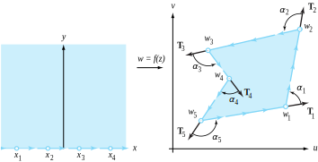
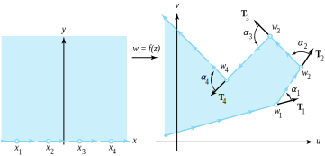
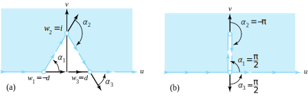

To proceed further, we must review the rotational effect of a conformal mapping \(w=f(z)\) at a point \(z_0\text{.}\) If the contour \(C\) has the parameterization \(z(t)=x(t)+iy(t)\text{,}\) then a vector \(\mathbf{\tau }\) tangent to \(C\) at the point \(z_0\) is
The image of \(C\) is a contour \(K\) given by \(w=u\big(x(t), \, y(t)\big) + iv\big(x(t), \, y(t)\big)\text{,}\) and a vector \(\mathbf{T}\) tangent to \(K\) at the point \(w_0=f(z_0)\) is
Hence the angle of inclination of the tangent \(\mathbf{\tau}\) to \(C\) at \(z_0\) is rotated through the angle \(\mathrm{Arg}\big(f\,'(z_0)\big)\) to obtain the angle of inclination of the tangent \(\mathbf{T}\) to \(K\) at the point \(w_0\text{.}\)
Many applications involving conformal mappings require the construction of a one-to-one conformal mapping from the upper half-plane \(\mathrm{Im}( z) >0\) onto a domain \(G\) in the \(w\) plane where the boundary consists of straight-line segments. Let’s consider the case where \(G\) is the interior of a polygon \(P\) with vertices \(w_1,\,w_2,\,.\,.\,.\,,\,w_n\) specified in the positive sense (counterclockwise). We want to find a function \(w=f(z)\) with the property
\begin{align}
w_k \amp = f(x_k) \text{ for } k=1,\,2, \ldots ,n-1, \text{ and }\tag{10.9.1}\\
w_n \amp = f(\infty) \text{ where } x_1 \lt x_2 \lt \cdots \lt x_{n-1}\lt \infty\text{.}\notag
\end{align}
Two German mathematicians Herman Amandus Schwarz (1843–1921) and Elwin Bruno Christoffel (1929–1900) independently discovered a method for finding \(f\text{,}\) which we present as Theorem 10.9.1.
Theorem10.9.1.Schwarz-Christoffel.
Let \(P\) be a polygon in the \(w\) plane with vertices \(w_1,\,w_2, \ldots ,w_n\) and exterior angles \(\alpha_k\text{,}\) where \(-\pi \lt \alpha_k \lt \pi\text{.}\) There exists a one-to-one conformal mapping \(w=f(z)\) from the upper half-plane \(\mathrm{Im}(z)>0\) onto \(G\) that satisfies the boundary conditions in Equations (10.9.1). The derivative \(f\,'(z)\) is
and the function \(f\) can be expressed as an indefinite integral
\begin{equation}
f(z) = B + A\int(z-x_1)^{-\frac{\alpha_1}{\pi}}(z-x_2)^{-\frac{\alpha_2}{\pi}} \cdots (z-x_{n-1})^{-\frac{\alpha_{n-1}}{\pi}}\,dz\text{,}\tag{10.9.3}
\end{equation}
where \(A\) and \(B\) are suitably chosen constants. Two of the points \(\{x_k\}\) may be chosen arbitrarily, and the constants \(A\) and \(B\) determine the size and position of \(P\text{.}\)
(which always points to the right) at the point \((x,0)\) must be rotated by the mapping \(w=f(z)\) so that the line segment \(x_{j-1}\lt x\lt x_j\) is mapped onto the edge of \(P\) that lies between the points \(w_{j-1}=f(x_{j-1})\) and \(w_j=f(x_j)\text{.}\) The amount of rotation is determined by \(\mathrm{Arg}\,f\,'(x)\text{,}\) so Equation (10.9.2) specifies \(f\,'(z)\) in terms of the values \(x_j\) and the amount of rotation \(\alpha_j\) that is required at the vertex \(f(x_j)\text{.}\)
If we let \(x_0=-\infty\) and \(x_n=\infty\text{,}\) then, for values of \(x\) that lie in the interval \(x_{j-1} \lt x \lt x_j\text{,}\) the amount of rotation is
Because \(\mathrm{Arg}(x-x_k)=0\) for \(1\le k\lt j\text{,}\) and \(\mathrm{Arg}(x-x_k) =\pi\) for \(j\le k\le n-1\text{,}\) we can write this equation as
The angle of inclination of the tangent vector \(\mathbf{T}_{j+1}\) to the polygon \(P\) at the point \(w=f(x)\text{,}\) for \(x_j \lt x \lt x_{j+1}\text{,}\) is
The angle of inclination of the vector tangent to the polygon \(P\) jumps abruptly by the amount \(\alpha_j\) as the point \(w=f(x)\) moves along the side \(\widehat{w_{j-1}w_j}\) through the vertex \(w_j\) to the side \(\widehat{w_jw_{j+1}}\text{.}\) Therefore the exterior angle to the polygon \(P\) at the vertex \(w_j\) is given by the angle \(\alpha_j\) and satisfies the inequality \(-\pi\lt \alpha_j\lt \pi\text{,}\) for \(j=1,\,2,\ldots,n-1\text{.}\) Since the sum of the exterior angles of a polygon equals \(2\pi\text{,}\) we have \(\alpha_n = 2\pi - \alpha_1 - \alpha_2 - \cdots - \alpha_{n-1}\) and only \(n-1\) angles need to be specified. The case \(n=5\) is illustrated in Figure 10.9.2.

Figure10.9.2.A Schwarz-Christoffel mapping with \(n=5\) and \(\alpha_1+\alpha_2+\cdots +\alpha_4>\pi\)
If the case \(\alpha_1 + \alpha_2 + \cdots + \alpha_{n-1} \le \pi\) occurs, then \(\alpha_n>\pi\text{,}\) and the vertices \(w_1,\,w_2,\ldots,w_n\) cannot form a closed polygon. For this case, Equations (10.9.2) and (10.9.3) will determine a mapping from the upper half plane \(\mathrm{Im}(z)>0\) onto an infinite region in the \(w\) plane, where the vertex \(w_n\) is at infinity. The case \(n=5\) is illustrated in Figure 10.9.3.

Figure10.9.3.A Schwarz-Christoffel mapping with \(n=5\) and \(\alpha_1 + \alpha_2 + \cdots + \alpha_4 \le \pi\)
Equation (10.9.3) gives a representation for \(f\) in terms of an indefinite integral. Note that these integrals do not represent elementary functions unless the image is an infinite region. Also, the integral will involve a multivalued function, and we must select a specific branch to fit the boundary values specified in the problem. Table 10.11.23, which appears at the end of this chapter, is useful for our purposes.
Use the Schwarz-Christoffel formula to verify that the function \(w=f(z)=\mathrm{Arcsin}z\) maps the upper half-plane \(\mathrm{Im}(z)>0\) onto the semi-infinite strip \(-\frac{\pi}{2}\lt u\lt \frac{\pi}{2}, \; v>0\) shown in Figure 10.9.5.
If we choose \(x_1=-1, \, x_2=1, \, w_1 = -\frac{\pi}{2}\text{,}\) and \(w_2=\frac{\pi}{2}\text{,}\) then \(\alpha_1=\frac{\pi}{2}\) and \(\alpha_2=\frac{\pi}{2}\text{,}\) and Equation (10.9.2) for \(f\,'(z)\) becomes
Verify that \(w = f(z) = (z^2-1)^\frac{1}{2}\) maps the upper half-plane \(\mathrm{Im}(z)>0\) onto the upper half-plane \(\mathrm{Im}(w)>0\) slit along the segment from \(0\) to \(i\text{.}\) (Use the principal square root throughout.)
will determine a mapping \(w=g(z)\) from the upper half-plane \(\mathrm{Im}(z)>0\) onto the portion of the upper half-plane \(\mathrm{Im}(w)>0\) that lies outside the triangle with vertices \(\pm d,\,i\) as indicated in Figure 10.9.7(a). If we let \(d \to 0\text{,}\) then \(w_1 \to 0, \; w_3 \to 0, \; \alpha_1 \to \frac{\pi}{2}, \;\alpha_2 \to -\pi\text{,}\) and \(\alpha_3 \to \frac{\pi}{2}\text{.}\) The limiting formula for the derivative \(g\,'(z)\) becomes
which will determine a mapping \(w=f(z)\) from the upper half-plane \(\mathrm{Im}(z)>0\) onto the upper half-plane \(\mathrm{Im}(w)>0\) slit from \(0\) to \(i\) as indicated in Figure 10.9.7(b).

Figure10.9.7.The regions of interest
An easy computation reveals that \(f(z)\) is given by
\begin{equation*}
w = f(z) =\frac{1}{\pi}\mathrm{Arcsin}(z) + \frac{i}{\pi}\mathrm{Arcsin}\left(\frac{1}{z}+\frac{1+i}{2}\right)
\end{equation*}
maps the upper half-plane \(\mathrm{Im}(z)>0\) onto the right angle channel in the first quadrant, which is bounded by the coordinate axes and the rays \(x \ge 1, \, y=1\) and \(y \ge 1, \, x=1\text{,}\) as depicted in Figure 10.9.9(b).
will determine a mapping \(w=g(z)\) of the upper half-plane onto the domain that is indicated in Figure 10.9.9(a). With \(\alpha_1 = \frac{\pi}{2}\text{,}\) we let \(d \to \infty\text{,}\) then \(\alpha_2 \to \pi\) and \(\alpha_3 \to -\frac{\pi}{2}\text{,}\) and the limiting formula for the derivative \(g\,'(z)\) becomes
where \(A=-iA_1\text{,}\) which will determine a mapping \(w=f(z)\) from the upper half plane onto the channel as indicated in Figure 10.9.9b. Using Table 11.5.10, we obtain
Let \(a\) and \(K\) be real constants with \(0\lt K\lt 2\text{.}\) Use the Schwarz-Christoffel formula to show that the function \(w=f(z)=(z-a)^K\) maps the upper half-plane \(\mathrm{Im}(z)>0\) onto the sector \(0\lt \arg_0 w\lt K\pi\) shown in Figure 10.9.10.
\(f\,'(z)=A(z-a)^{-\frac{\pi -k\pi}{\pi}}=A(z-a)^{k-1}\text{.}\) Integrate and get \(f(z)=\frac{A}{k}(z-a)^{k}\text{,}\) then choose \(A=k\text{.}\)
2.
Let \(a\) be a real constant. Use the Schwarz-Christoffel formula to show that the function \(w=f(z)=\mathrm{Log}(z-a)\) maps the upper half-plane \(\mathrm{Im}(z)>0\) onto the infinite strip \(0\lt v\lt \pi\) shown in Figure 10.9.11.
\hint{Set \(x_1=a-1 \, x_2=a, \, w_1=i\pi\text{,}\) and\(w_2=-d\text{.}\) Then let \(d \to \infty\text{.}\)}
For the remaining exercises, construct the derivative \(f\,'(z)\) and use the Schwarz-Christoffel formula, Equation (10.9.3), and techniques of integration to determine the required conformal mapping \(w=f(z)\text{.}\)
\end{task}
(a)
Show that \(w=f(z)=\frac{1}{\pi}(z^2-1)^\frac{1}{2} + \frac{1}{\pi}\mathrm{Log}\left[ z+(z^2-1)^\frac{1}{2}\right] - i\) maps the upper half-plane onto the domain indicated in Figure 10.9.12.
\hint{Set \(x_1=-1
\,w_1=0\text{,}\) and \(w_2=-i\text{.}\)}
\(f\,'(z) = A(z+1)^\frac{1}{2}(z-1)^\frac{1}{2} = A\left[\frac{z}{(z^2-1)^\frac{1}{2}} + \frac{1}{(z^2-1)^\frac{1}{2}}\right]\text{.}\) Integrate with the boundary conditions \(f(-1)=0\) and \(f(1)=-1\) to get \(w=f(z)=\frac{1}{\pi }\left[(z^2-1)^\frac{1}{2} + \mathrm{Log}(z+(z^2-1)^\frac{1}{2})\right]-i\text{.}\)
(b)
Show that \(w=f(z)=\frac{2}{\pi}(z^2-1)^\frac{1}{2}+\frac{2}{\pi}\mathrm{Arcsin}\frac{1}{z}\) maps the upper half-plane onto the domain indicated in Figure 10.9.13.
\hint{Set \(x_1=w_1=-1 ,\, x_2=0, \, x_3=w_3=1\text{,}\) and \(w_2=-id\text{.}\) Then let \(d \to \infty\text{.}\)}
(c)
Show that \(w=f(z)=\frac{1}{2}\mathrm{Log}(z^2-1)=\mathrm{Log}\left[(z^2-1)^\frac{1}{2}\right]\) maps the upper half-plane \(\mathrm{Im}(z) >0\) onto the infinite strip \(0\lt v\lt \pi\) slit along the ray \(u\le 0\)\(,\,v=\frac{\pi}{2}\text{,}\) per Figure 10.9.14.
\(f\,'(z) = A(z+1)^{-1}z(z-1)^{-1}\text{,}\) and \(w=f(z)=\mathrm{Log}(z^2-1)^\frac{1}{2}\text{.}\)
(d)
Show that \(w=f(z) = -\frac{2}{\pi}z(1-z^2)^\frac{1}{2}-\frac{2}{\pi}\mathrm{Arcsin}(z)\) maps the upper half-plane onto the domain indicated in Figure 10.9.15.
\hint{Set \(x_1=-1, \, x_2=1, \, w_1=1\text{,}\) and \(w_2=-1\text{.}\)}
(e)
Show that \(w=f(z)=z+\mathrm{Log}(z)\) maps the upper half-plane \(\mathrm{Im}(z)>0\) onto the upper half-plane \(\mathrm{Im}(w)>0\) slit along the ray \(u \le -1, \, v=\pi\text{,}\) as shown in Figure 10.9.16.
\(f\,'(z) = A(z+1)^{1}z^{-1} = A(1+\frac{1}{z})\text{.}\) Integrate to get \(f(z)=z+\mathrm{Log}(z)\text{.}\)
(f)
Show that \(w=f(z)=i\pi+2(z+1)^\frac{1}{2}+\mathrm{Log}\left[\frac{1-(z+1)^\frac{1}{2}}{1+(z+1)^\frac{1}{2}}\right]\) maps the upper half-plane onto the domain indicated in Figure 10.9.17.
\hint{Set \(x_1=-1, \, x_2=0, \, w_1=i\pi\text{,}\) and \(w_2=-d\text{.}\) Then let \(d \to \infty\text{.}\)}
(g)
Show that \(w=f(z)=(z-1)^{\alpha}\left[\frac{1+\alpha z}{1-\alpha}\right]^{1-\alpha}\) maps the upper half-plane \(\mathrm{Im}(z) >0\) onto the upper half-plane \(\mathrm{Im}(w)>0\) slit along the segment from \(0\) to \(e^{i\alpha \pi}\text{,}\) per Figure 10.9.18.
Select \(x_1 = -\frac{1-\alpha}{\alpha }\) and \(x_2=x_3=1\text{,}\) then form \(f\,'(z) = A(z+\frac{1-\alpha}{\alpha })^{-\alpha}(z)(z-1)^{\alpha -1}\text{.}\)
Computation then reveals that \(A=(\frac{1-\alpha }{\alpha})^{\alpha -1}\text{,}\) which is used to construct the desired function \(w=f(z) =\int A(z+\frac{1-\alpha}{\alpha })^{-\alpha}(z)(z-1)^{\alpha -1}\,dz = (z-1)^{\alpha}(1+ \frac{\alpha z}{1-\alpha})^{1-\alpha}\text{.}\)
(h)
Show that \(w = f(z) = 4(z+1)^\frac{1}{4} + \log\left[\frac{(z+1)^\frac{1}{4}-1}{(z+1)^\frac{1}{4}+1}\right] + i\log\left[\frac{i-(z+1)^\frac{1}{4}}{i+(z+1)^\frac{1}{4}}\right]\) maps the upper half-plane onto the domain indicated in Figure 10.9.19.
\hint{Set \(z_1=-1, \, z_2=0, \, w_1=i\pi\text{,}\) and \(w_2=-d\text{.}\) Then let \(d \to \infty\text{.}\) Use the change of variable \(z+1=s^4\) in the resulting integral.}
(i)
Show that \(w=f(z) = -\frac{i}{z}z^\frac{1}{2}(z-3)\) maps the upper half-plane onto the domain indicated in Figure 10.9.20.
\hint{Set \(x_1=0\text{,}\)\(x_2=1\text{,}\)\(\,w_1=-d\text{,}\) and \(w_2=i\) and let \(d\to 0\text{.}\)}
\(f\,'(z) = Az^{-\frac{1}{2}}(z-1) = A(z^\frac{1}{2}-z^{-\frac{1}{2}})\text{.}\) Integrate and get \(f(z)=-\frac{i}{2}z^\frac{1}{2}(z-3)\text{.}\)
(j)
Show that \(\displaystyle w = f(z) = \int \frac{1}{(1-z^2)^\frac{3}{4}}\,dz\) maps the upper half-plane \(\mathrm{Im}(z)>0\) onto a right triangle with angles \(\frac{\pi}{2}, \, \frac{\pi}{4}\text{,}\) and \(\frac{\pi}{4}\text{.}\)
(k)
Show that \(\displaystyle w=f(z) =\int\frac{1}{(1-z^2)^\frac{2}{3}}\,dz\) maps the upper half-plane onto an equilateral triangle.
(l)
Show that \(\displaystyle w=f(z)=\int\frac{1}{(z-z^3)^\frac{1}{2}}\,dz\) maps the upper half-plane onto a square.
(m)
Show that \(w=f(z)=2(z+1)^\frac{1}{2}-\mathrm{Log}\left[\frac{1-(z+1)^\frac{1}{2}}{1+(z+1)^\frac{1}{2}}\right]\) maps the upper half-plane \(\mathrm{Im}(z) >0\) onto the domain indicated in Figure 10.9.21.